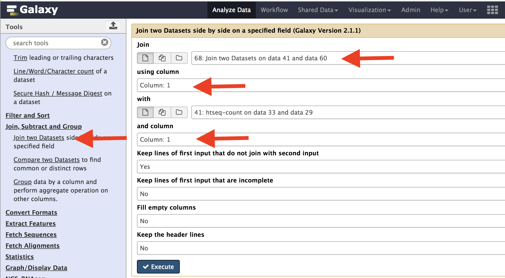
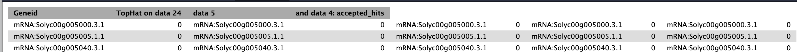
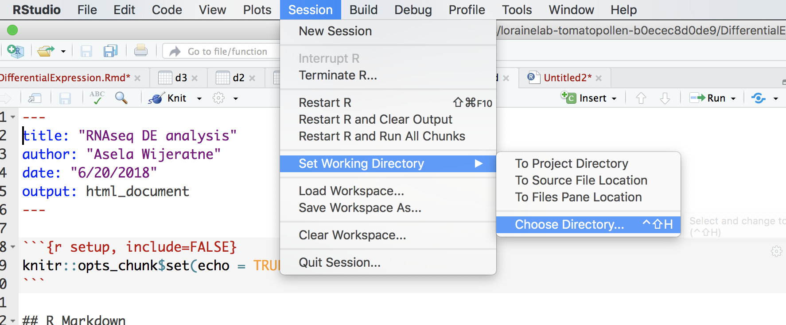
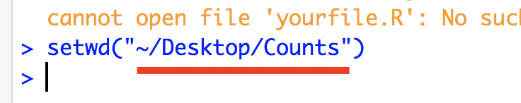

Setup instructions (This is from Data Carpentry (http://www.datacarpentry.org/R-genomics/))¶
R and RStudio are separate downloads and installations. R is the underlying statistical computing environment, but using R alone is no fun. RStudio is a graphical integrated development environment (IDE) that makes using R much easier and more interactive. You need to install R before you install RStudio. After installing both programs, you will need to install the tidyverse package from within RStudio. Follow the instructions below for your operating system, and then follow the instructions to install tidyverse and RSQLite.
Windows¶
If you already have R and RStudio installed¶
Open RStudio, and click on “Help” > “Check for updates”. If a new version is available, quit RStudio, and download the latest version for RStudio. To check which version of R you are using, start RStudio and the first thing that appears in the console indicates the version of R you are running. Alternatively, you can type sessionInfo(), which will also display which version of R you are running. Go on the CRAN website and check whether a more recent version is available. If so, please download and install it. You can check here for more information on how to remove old versions from your system if you wish to do so.
If you don’t have R and RStudio installed¶
Download R from the CRAN website. Run the .exe file that was just downloaded Go to the RStudio download page Under Installers select RStudio x.yy.zzz - Windows XP/Vista/7/8 (where x, y, and z represent version numbers) Double click the file to install it Once it’s installed, open RStudio to make sure it works and you don’t get any error messages.
macOS¶
If you already have R and RStudio installed¶
Open RStudio, and click on “Help” > “Check for updates”. If a new version is available, quit RStudio, and download the latest version for RStudio. To check the version of R you are using, start RStudio and the first thing that appears on the terminal indicates the version of R you are running. Alternatively, you can type sessionInfo(), which will also display which version of R you are running. Go on the CRAN website and check whether a more recent version is available. If so, please download and install it.
If you don’t have R and RStudio installed¶
Download R from the CRAN website. Select the .pkg file for the latest R version Double click on the downloaded file to install R It is also a good idea to install XQuartz (needed by some packages) Go to the RStudio download page Under Installers select RStudio x.yy.zzz - Mac OS X 10.6+ (64-bit) (where x, y, and z represent version numbers) Double click the file to install RStudio Once it’s installed, open RStudio to make sure it works and you don’t get any error messages.
Using DEseq and EdgeR to find differentially expressed genes¶
The first step is to merge all count data files we got from the Htseq. Use the Join two data sets side-by-side on Galaxy and select output from Control2 and Control3 samples. Use Column one to join the data sets. After this is complete, take the resulting file, and combine with Temperate1 output. Repeat this for the next two data sets.

The resulting file would like this. Your actual number may be different, but should have 10 columns.

Download this file onto your computer and move it to folder called “Counts”. Rename file “counts.tabular”.

Open Rstudio and go to Session and select “Set Working Directory” and chose the folder that you just created.

In the console, you will see the following message and the part underline in red is the path to your directory.
Replace your path in this portion of the following code “/Users/aselawijeratne/Desktop”. Execute this to read file into R.
d1=read.delim('/Users/aselawijeratne/Desktop/Counts/counts.tabular', header = FALSE)
Format data using R.
#select only column with data
d1 <- d1[-c(3, 5, 7, 9)]
#Name the columns
colnames(d1) <- c("gene_names", "C2", "C3", "T1", "T2", "T3")
#get rid of the mRNA part infront of the gene name
row_names <- gsub("mRNA:", "", d1$gene_names)
#remove the last trailing ".1" from gene names
row_names <- gsub('.{2}$', '', row_names)
#assign row_name vector to the row names of the data.
row.names(d1) <- row_name
#remove unformated gene names.
d1$gene_names <- NULL
Import necessary libraries.
library(edgeR)
library(DESeq2)
Filter data.
#Filter data with rowsum < 10
d1$rowsum <- rowSums(d1)
#Low count filtered
d1_filterd <- d1[d1$rowsum > 10, ]
Create a group file and normalize data using EdgeR.
conds <- c(rep("C", 2), rep("T", 3))
y <- DGEList(counts=d1_filterd, group=conds, remove.zeros=TRUE) # Constructs DGEList object
dge=calcNormFactors(y)
A multi-dimensional scaling (MDS) plot to see the similarity among samples.
# color for controls
cn.color='blue'
# color for treatments
tr.color='brown'
# define a title for the plot
main='MDS Plot for Count Data'
#par(las=1) # makes y axis labels horizontal not vertical
colors=c(rep(cn.color,2),rep(tr.color,3))
plotMDS(dge,main=main,labels=colnames(dge$counts),
col=colors,las=1)
Hierarchical clustering can also be used to check how different samples are. As you can see, sample T2 is very different from the rest.
>normalized.counts=cpm(dge)
>transposed=t(normalized.counts) # transposes the counts matrix
>distance=dist(transposed) # calculates distance
>clusters=hclust(distance) # does hierarchical clustering
>plot(clusters) # plots the clusters as a dendrogram
Differential expression analysis
y <- estimateCommonDisp(y) # Estimates common dispersion
y <- estimateTagwiseDisp(y) # Estimates tagwise dispersion
et <- exactTest(y, pair=c("C", "T")) # Computes exact test for the negative binomial distribution.
topTags(et, n=4)
Convert data into a dataframe and use dfr and fold change to select genes.
edge <- as.data.frame(topTags(et, n=50000))
edge2fold <- edge[edge$logFC >= 1 | edge$logFC <= -1,]
edge2foldpadj <- edge2fold[edge2fold$FDR <= 0.01, ]
DEseq analysis¶
Create matrix for DESeq2 and prepare data for DEseq
d1_matrix <- data.matrix(d1_filterd) #Create matrix for DESeq2
genotype <- data.frame(Genotype=conds) # create a dataframe for groups
dse <- DESeqDataSetFromMatrix(countData = d1_matrix,
colData = genotype,
design = ~ Genotype)
colData(dse)$Genotype <- factor(colData(dse)$Genotype,
levels=c("C","T"))
Differential expression analysis
dse <- DESeq(dse)
dse <- DESeq(dse)
ddsLocal <- estimateDispersions(dse, fitType="local", maxit =500)
ddsLocal <- nbinomWaldTest(ddsLocal)
res <- results(ddsLocal)
Order the data using p-adjusted value.
res <- res[order(res$padj),]
head(res)
res <- na.omit(res)
Use dfr and fold change to select genes.
deseq_2fold <- res[res$log2FoldChange >= 1 | res$log2FoldChange <= -1,]
deseq_2foldpadj <- data.frame(deseq_2fold[deseq_2fold$padj <= 0.01, ])
bothDF <- merge(deseq_2foldpadj, edge2foldpadj, by="row.names", all.x=TRUE)
Writing results files. You can open “edgr_deseq2.txt” file in Excel if you want to look at it.
write.table(as.data.frame(bothDF), file="edgr_deseq2.txt", sep="\t", quote = F, row.names=F, col.names=TRUE)
Combine DESeq and EdgR to make Venn diagram¶
Count how many gene from each analysis and make a Venn diagram. You need to have overLapper.R file (down loaded from Bb) in Counts folder.
source("overLapper.R")
setlist <- list(edgeR=rownames(edge2foldpadj), DESeq=rownames(deseq_2foldpadj))
OLlist <- overLapper(setlist=setlist, sep="_", type="vennsets")
counts <- sapply(OLlist$Venn_List, length)
vennPlot(counts=counts)